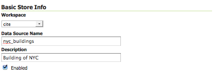
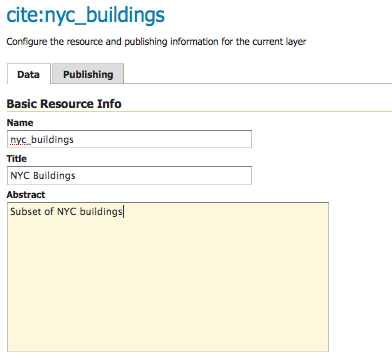
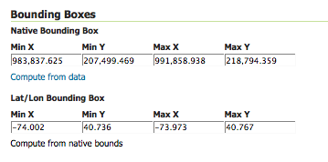

Publishing a PostGIS table¶
This tutorial walks through the steps of publishing a PostGIS table with GeoServer.
Note
This tutorial assumes that PostgreSQL/PostGIS has been previously installed on the system and responding on localhost on port 5432, and also that GeoServer is running at http://localhost:8080/geoserver.
Data preparation¶
First let’s gather that the data that we’ll be publishing.
Download the file
nyc_buildings.zip. It contains a PostGIS dump of a dataset of buildings from New York City.Create a PostGIS database called
nyc. This can be done with the following commands:createdb nyc psql -d nyc -c 'CREATE EXTENSION postgis'
Note
You may need to supply a user name and password with these commands.
Extract
nyc_buildings.sqlfromnyc_buildings.zip.Import
nyc_buildings.sqlinto thenycdatabase:psql -f nyc_buildings.sql nyc
Creating a new workspace¶
The next step is to create a workspace for the data. A workspace is a container used to group similar layers together.
Note
This step is optional if you’d like to use an existing workspace. Usually, a workspace is created for each project, which can include stores and layers that are related to each other.
In a web browser, navigate to
http://localhost:8080/geoserver.Log into GeoServer as described in the Logging In section.
Navigate to .

Workspaces page¶
Click the Add new workspace button.
You will be prompted to enter a workspace Name and Namespace URI.

Configure a new workspace¶
Enter the Name as
nycand the Namespace URI ashttp://geoserver.org/nyc.Note
A workspace name is a identifier describing your project. It must not exceed ten characters or contain spaces. A Namespace URI (Uniform Resource Identifier) can usually be a URL associated with your project with an added trailing identifier indicating the workspace. The Namespace URI filed does not need to resolve to an actual valid web address.
Click the Submit button. The
nycworkspace will be added to the Workspaces list.
Creating a store¶
Once the workspace is created, we are ready to add a new store. The store tells GeoServer how to connect to the shapefile.
Navigate to .
You should see a list of stores, including the type of store and the workspace that the store belongs to.

Adding a new data source¶
Create a new store by clicking the
PostGISlink.Enter the Basic Store Info:
Select the
nycWorkspaceEnter the Data Source Name as
nyc_buildingsAdd a brief Description
Basic Store Info¶
Specify the PostGIS database Connection Parameters:
Option
Value
dbtype
postgis
host
localhost
port
5432
database
nyc
schema
public
user
postgres
passwd
(Password for the
postgresuser)validate connections
(Checked)
Note
Leave all other fields at their default values.

Connection Parameters¶
Click Save.
Creating a layer¶
Now that the store is loaded, we can publish the layer.
Navigate to .
Click Add a new resource.
From the New Layer chooser menu, select
nyc:nyc_buidings.
Store selection¶
On the resulting layer row, select the layer name
nyc_buildings.New layer selection¶
The Edit Layer page defines the data and publishing parameters for a layer. Enter a short Title and an Abstract for the
nyc_buildingslayer.Basic Resource Info¶
Generate the layer’s bounding boxes by clicking the Compute from data and then Compute from native bounds links.
Generating bounding boxes¶
Click the Publishing tab at the top of the page.
We can set the layer’s style here. Under WMS Settings, ensure that the Default Style is set to polygon.
Select Default Style¶
Finalize the layer configuration by scrolling to the bottom of the page and clicking Save.
Previewing the layer¶
In order to verify that the nyc_buildings layer is published correctly, we can preview the layer.
Navigate to the Layer Preview screen and find the
nyc:nyc_buildingslayer.Click the OpenLayers link in the Common Formats column.
An OpenLayers map will load in a new tab and display the shapefile data with the default line style. You can use this preview map to zoom and pan around the dataset, as well as display the attributes of features.

Preview map of nyc_buildings¶